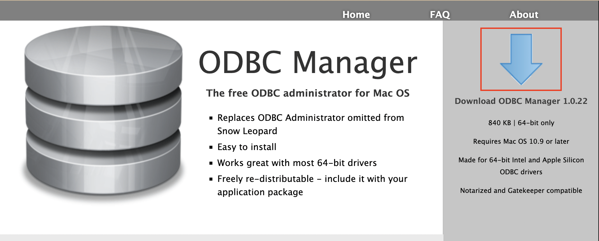
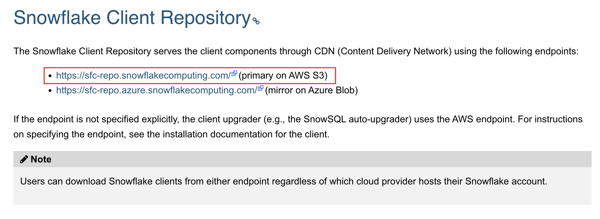
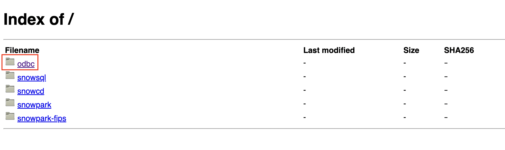
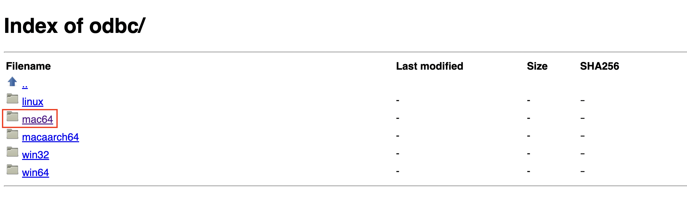
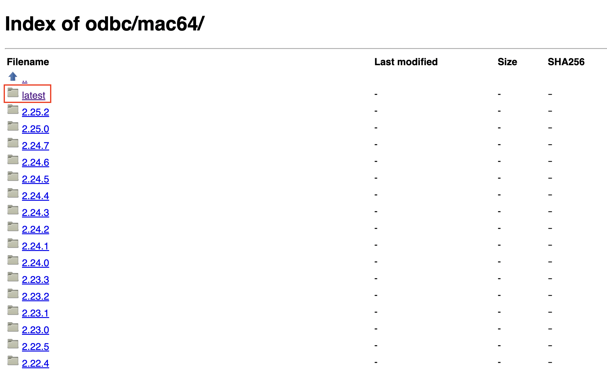
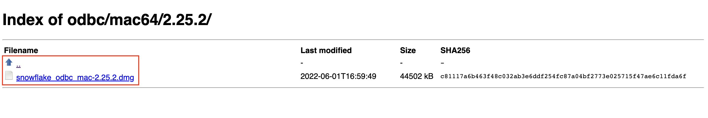
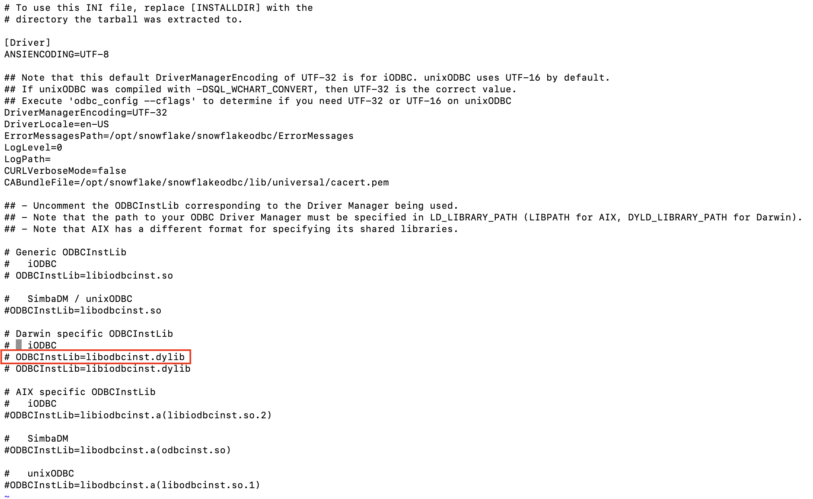
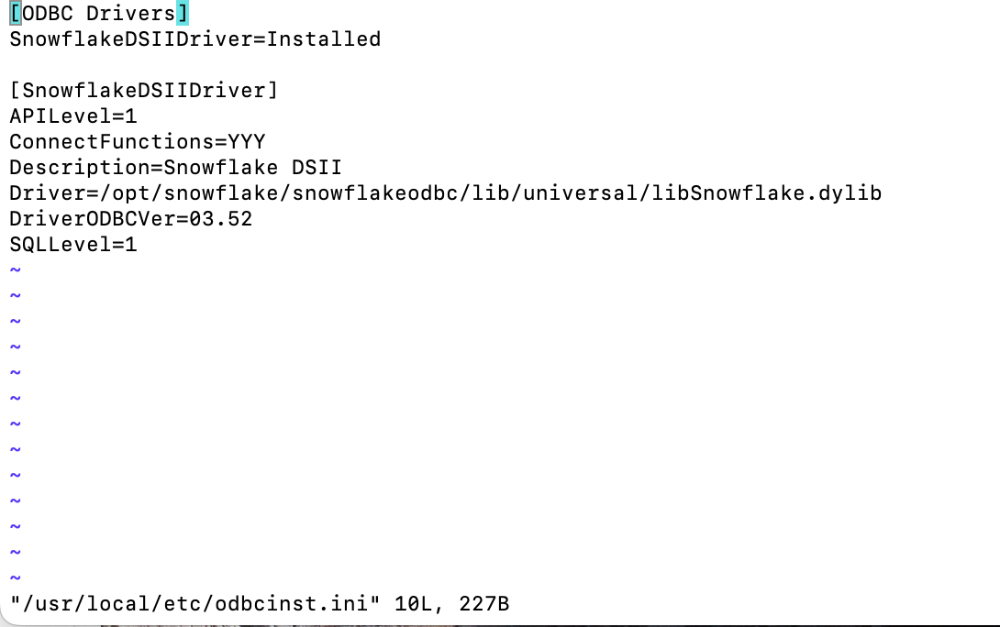

ODBC for Mac Users
odbc_mac.RmdThere are multiple ways to connect Snowflake to RStudio using MacOs. The two main ways are using the iODBC Driver or the unixODBC manager. Using the unixODBC manager is recommended because although the iODBC manager is simpler to use, it doesn’t work in many cases. This tutorial focuses on using the unixODBC manager to connect to Snowflake.
Step 1: Install the unixODBC Manager
Open the terminal and enter the following commands to install the manager.
brew update
brew install unixodbc freetds
Step 2: Install the iODBC and ODBC Managers
The ODBC Manager is a useful tool to configure the ODBC DSN. Once downloaded, open the file and follow the instructions to install the driver.

The iODBC Manager will still need to be installed, despite what was mentioned earlier. It contains files needed to properly configure DSNs.
Step 3: Download the Driver
Download the latest version of the driver from the Snowflake Client Repository. Download the version that uses the AWS endpoint.





Follow the prompts to install the driver.
Step 4: Specify the ODBC Manager path
-
In the terminal, use the following command to open the simba.snowflake.ini file:
vi /opt/snowflake/snowflakeodbc/lib/universal/simba.snowflake.ini In the file, there are instructions to uncomment the ODBCInstLib being used with the driver manager. The driver manager being used is iODBC. Locate the “Darwin Specific ODBCInstLib” in the file, then uncomment the line of code that contains “libodbcinst.dylib”.

- Use the command
:wqto save the file. If this throws an error, use:wq!.
Step 6: Add Driver
-
Open the odbcinst.ini file
sudo vi /usr/local/etc/odbcinst.ini If prompted for a password, enter your computer’s password to access the file.
- Insert the following sample text.

- Save and close the file using
:wq
Step 7: Add the Snowflake DSN
-
Open the local odbc.ini file
sudo vi /usr/local/etc/odbc.ini Add the sample entry to the file.
Edit the sample entry to match your snowflake database. In the simplest form, this will include the driver (location of the driver), a name(in this case it’s ‘SNOWFLAKE_ODBC’), and the server (the url for your database). The other options will be the default parameters if nothing is specified in the ODBC connect string.
Save and quit using
:wq